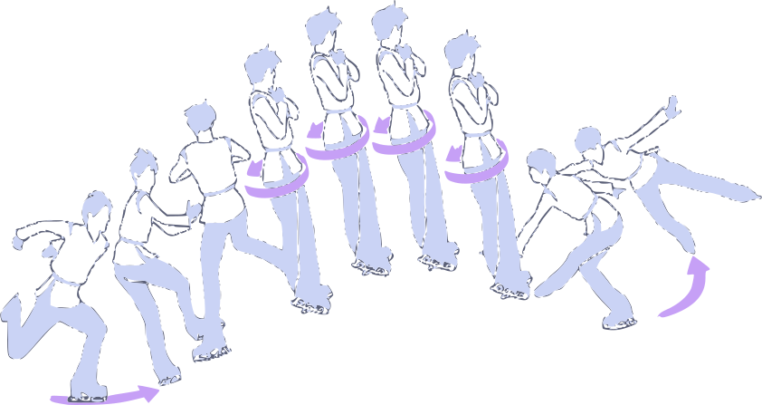
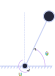
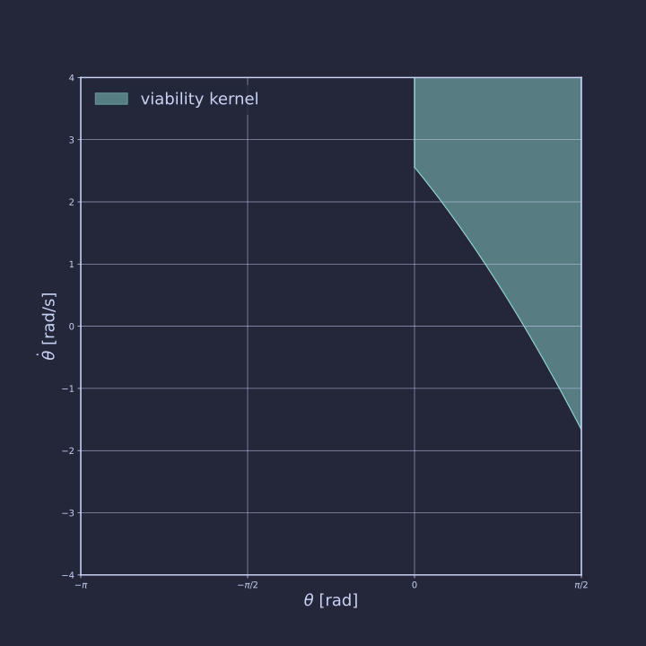
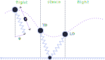
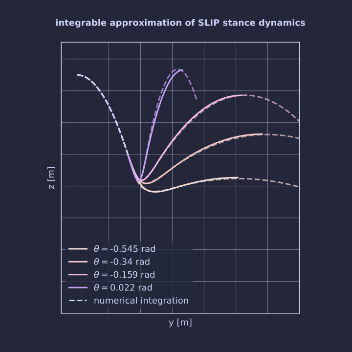
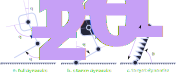
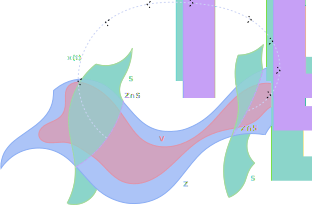
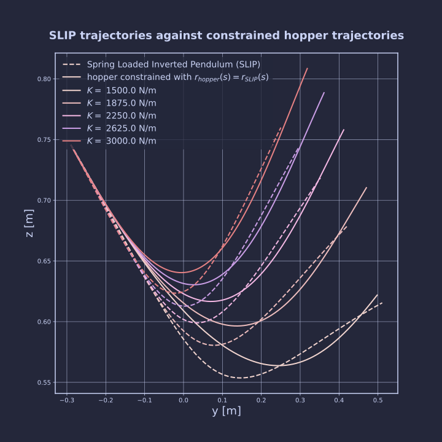

Rapport de première année de doctorat
Gabin Lembrez
- Contexte
- Problématique
- Résultats
- Noyau de viabilité du pendule inverse
- Noyau de viabilité du pendule sur ressort
- Commande basée sur la viabilité
- Extension par la théorie des contraintes virtuelles
- Prochaines étapes
CONTEXTE
Motivations

La locomotion bipède du point de vue des êtres vivants :
- Mouvements "fluides" et agiles
- Utilisation des couplages (Yeadon, 2000)
- Mobilisation de tous les effets dynamiques
Etat de l'art

Modèles simplifiés
- Basés sur des dérivés du pendule inverse
- Permet des comportements robustes
- Absorbe les effets dynamiques dans le modèle simple
- Se généralise mal à haute vitesse
Etat de l'art

Méthodes "corps complet"
- Résoudre un problème de commande optimale en temps réel ( Tassa et al., 2012 )
- Mobilise la dynamique complète
- Optimise les contacts
- Requiert une importante puissance de calcul
Etat de l'art

Méthodes "IA"
- Approche "model-free"
- Mobilise la dynamique complète
- Emergence des comportements dynamiques recherchés ( Radosavovic et al., 2024 )
- Défauts des méthodes basées sur des données
Problématique
Concevoir un méthode de commande de robots à jambes à haute vitesse
- Générale
- Mobilisant les effets dynamiques
- Basée modèle - sans apprentissage
- Interprétable
Notre approche

Noyau de viabilité
Définition
Le noyau de viabilité $\mathcal{V}$ est l'ensemble des états à partir desquels il existe une commande permettant d'éviter un ensemble d'états d'échecs $\mathcal{F}$ (Wieber, 2008). $$ \mathcal{V} = \left\{ x\in\mathcal{X} \; | \; \exists u(t)\in\mathcal{U}: x(t+T)\notin \mathcal{F} \right\} $$RESULTATS
Noyau de viabilité du pendule

- Représentation minimaliste d'un pas
- Le couple transmissible est supposé limité $\tau<\bar\tau$
- L'actionneur a-t'il assez de puissance pour compléter le pas avant que le pendule ne tombe ?
Noyau de viabilité du pendule

Théorème :
$x=(\theta,\dot{\theta})\in \mathcal{V} $ si :- $\dot{\theta}>0$ et $\bar{u}>1$
- $\dot{\theta}<0$ et $\bar{u}\theta > \frac{l}{2g}\dot{\theta}^2+\sin\theta$
- $\dot{\theta}>0$, $\bar{u}<1$ et $\arccos(\bar{u})<\theta$
- $\dot{\theta}<0$, $\bar{u}<1$ et $\arccos(\bar{u})>\theta$
- $\bar{u}<1$, $sign(\dot{\theta})\arccos(\bar{u}) < sign(\dot{\theta})\theta$ et
Viabilité du pendule sur ressort
Viabilité du pendule sur ressort

Mise en forme du problème
- La viabilité a du sens vis à vis de la dynamique des actionneurs
- On choisit une modélisation simple
- La viabilité est approchée à partir d'une contrainte de hauteur minimale
Viabilité du pendule sur ressort

Approximation de la dynamique
Sous des hypothèses raisonnables, on peut approcher la dynamique au sol par un modèle intégrable d'oscillateur harmonique (Saranli et al., 2010).
\[
\begin{align}
r(t) &= Me^{-\xi\omega_0 t}\cos(\omega_d t + \phi) \\
\theta(t) &= \alpha + \beta t + \gamma e^{-\xi\omega_0 t}\cos(\omega_d t + \psi)
\end{align}
\]
On peut estimer la hauteur du prochain saut.
Commande basée sur la viabilité
Contrôleur :
Objectif : rendre l'ensemble $\mathcal{S}$ invariant \[ \begin{cases} u^* = \text{argmin} \quad J(x_n,u) \\ \textbf{s.t.} \quad x_{n+1} \in \mathcal{S} \end{cases} \]
Commande basée sur la viabilité
Performances :
- Le contrôleur permet d'accomoder en temps réel des commandes de l'utilisateur
- Performances indépendantes de la vitesse de déplacement
- Une définition naturelle de marges de robustesse
Extensions avec des contraintes virtuelles
Extension avec des contraintes virtuelles

Objectif : contraindre le système à exister sur un espace restreint par linéarisation partielle. ( Westerveldt et al., 2003 - Griffin et al., 2017 )
Construction des contraintes virtuelles par optimisation :
\[
\theta^* = \min_{\theta} J(\theta)
\]
sous contraintes :
\[
\begin{align}
|u| & < \bar u \\
z & \in \mathcal{V}
\end{align}
\]
Commande basée sur la viabilité

Analyse et perspectives :
- La définition "naïve" de la contrainte ne permet pas d'estimer la hauteur du prochain apex
- Il faut écrire la zéro-dynamique
- Peut être utilisé pour initialiser la recherche d'optimum
PROCHAINES ETAPES
Court terme

- Commande du compas (Spong, 1999) à partir du noyau de viabilité du pendule iverse
- Finalisation de la commande du sauteur en boucle fermée
- Généralisation à plusieurs membres
Long terme
- Approche systématique de la conception des contraintes
- Passage en 3 dimensions
- Application à des systèmes réels